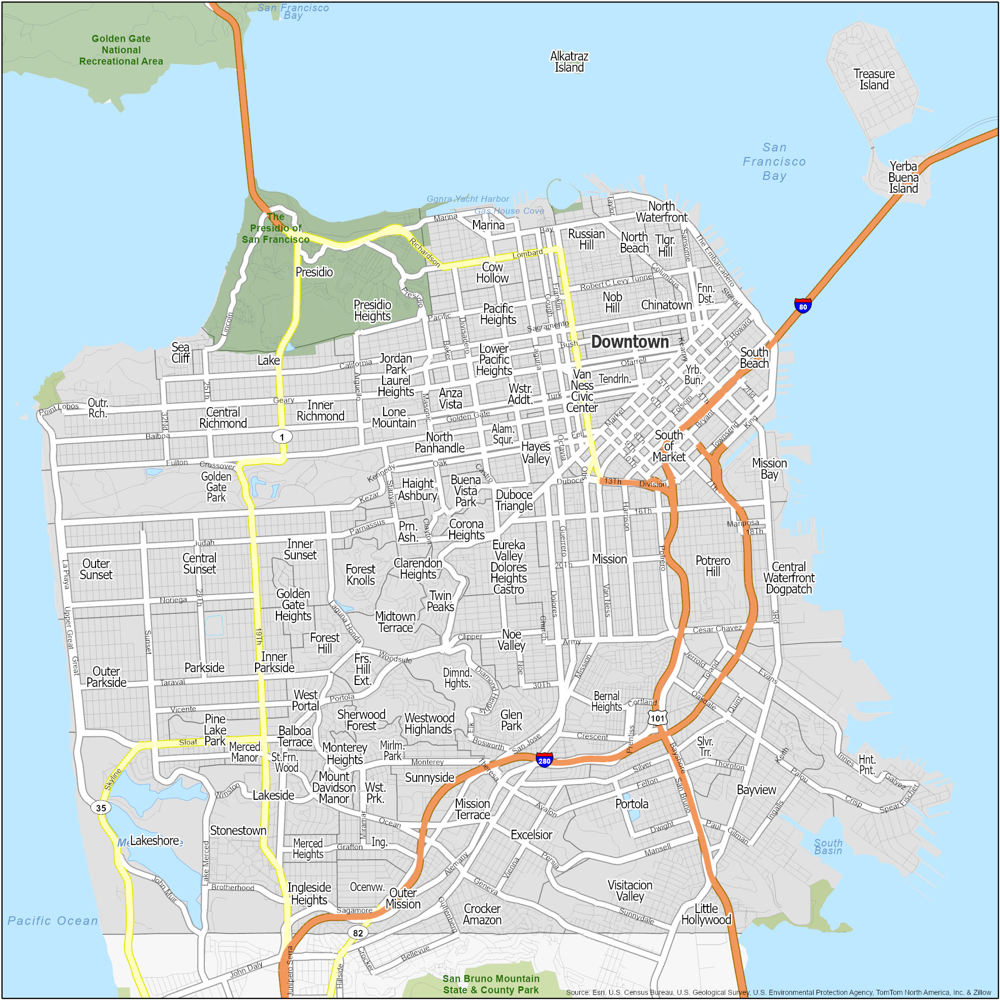

Every great movie starts with a question. Ours is simple: what does it take to make a hit film in San Francisco? We are exploring two kinds of success: The kind that fills seats — box office gold. And the kind that fills trophy cases — awards and critical acclaim. We have merged 2 datasets: filming locations in San Francisco and movie information from The Open Movie Database. We hope our analysis will help film students, young directors, movie production companies or just movie buffs see what makes a movie truly great.
